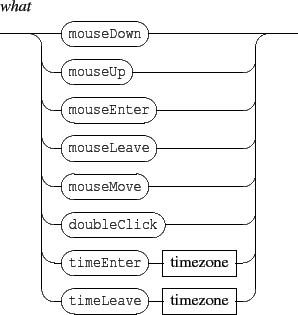

The general form of the message is:

Events currently watchable are:


A time zone is defined by 2 dates expressed as rational values (i.e. with 4 integers).
The associated OSC message is any valid OSC message (not restricted to the Interlude message set), with an extended address scheme, supporting IP addresses or host names and udp port number to be specified as OSC addresses prefix. The message parameters are any valid OSC type or variables (see section 14.2).


Example:
1) /ITL/scene/myObject watch mouseDown "/ITL/scene/myObject" "show" 0 2) /ITL/scene/myObject watch mouseDown "host.domain.org:12100/an/address" "start"1) Request the object myObject to watch mouseDown events and send a message to itself.